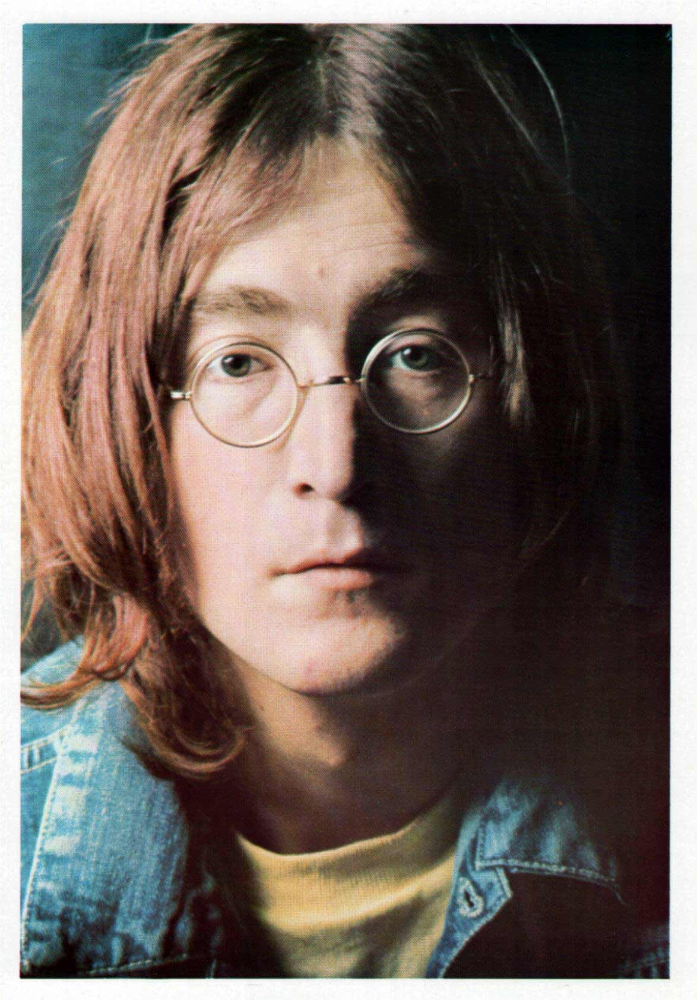
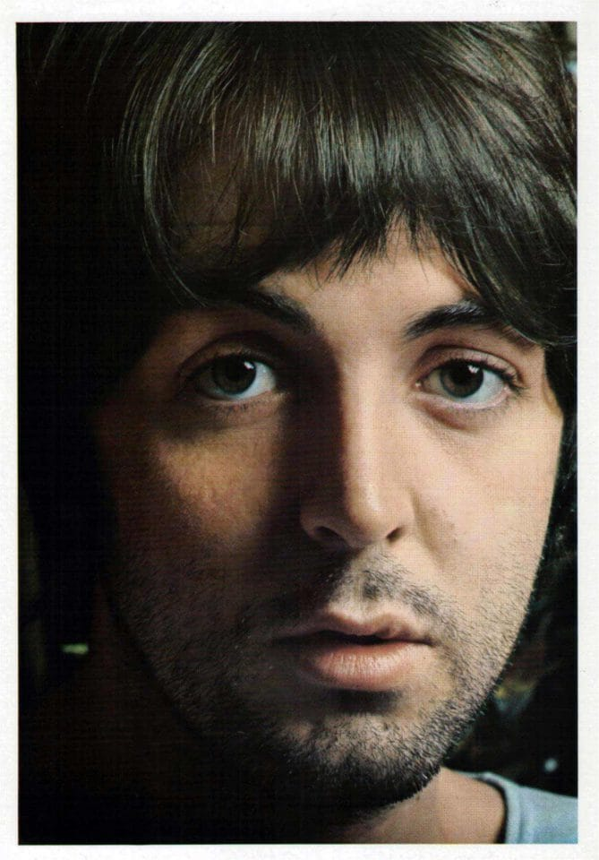
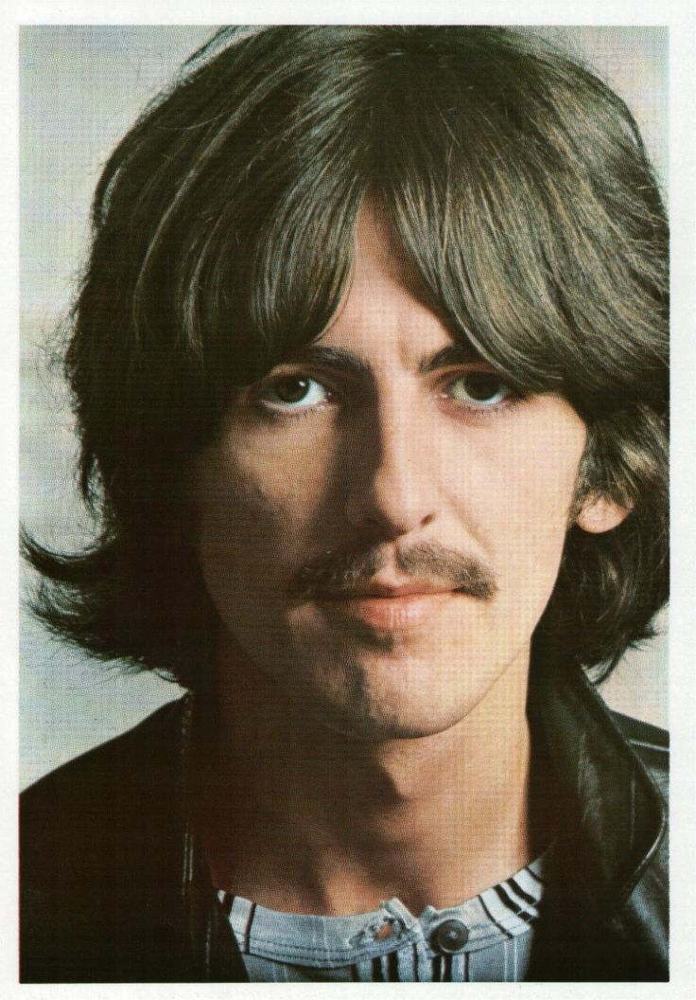
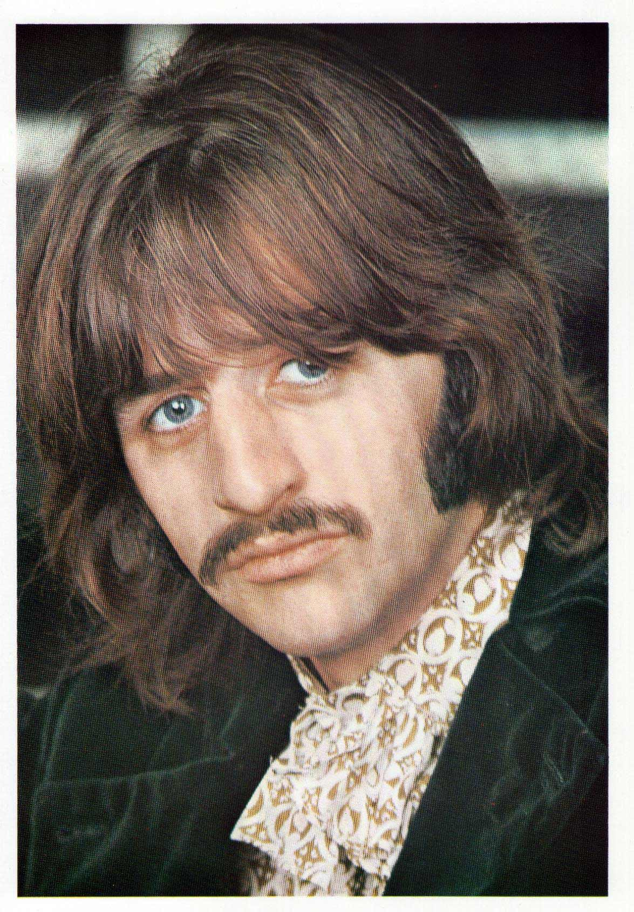

John Lennon
Voz y guitarra rítmica. Letras profundas y visión innovadora.
Somos estudiantes que desarrollaron este sitio como homenaje a The Beatles, destacando su historia, su música y su impacto en la cultura mundial.

Voz y guitarra rítmica. Letras profundas y visión innovadora.

Bajista, compositor y creador de melodías inmortales.

Guitarra principal e incorporador de nuevas sonoridades.

Baterista con estilo único e inconfundible.